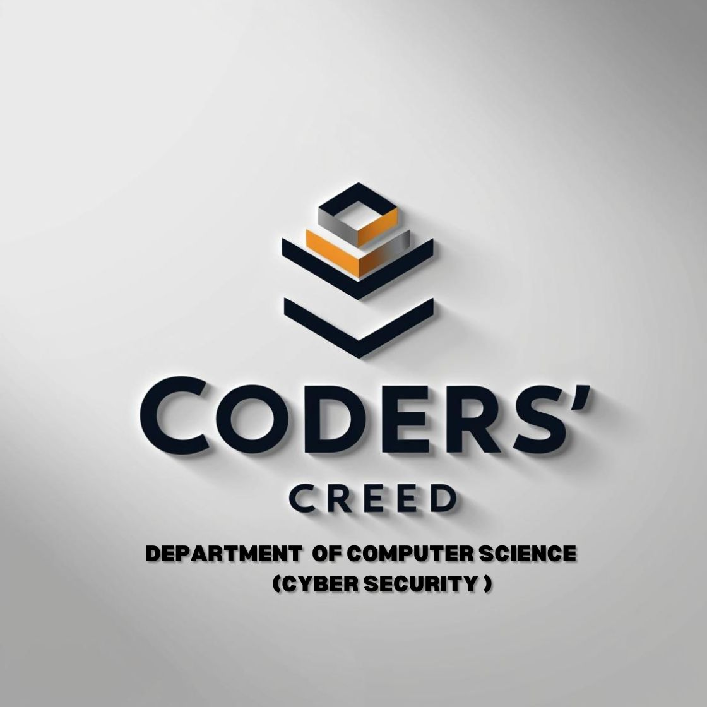

September 2024
Faculty Achievements
- Dr Srinidhi G A published papers on “Quantum Cryptography for Health data security” and “Deep Learning Architectures” in the International Journal of Science and Research.
Departmental Activities
- 3rd semester students visited the Integrated City Management Command and Control Centre, Tumkur Smart City on 28th September 2024.

October 2024
Departmental Activities
- FDP on “AI Based Cyber Security for Internet of Everything” held from 21st to 26th Oct under ATAL AICTE.
- National Cyber Security Awareness Month organized.
- Industrial visit to BOSCH Bengaluru (25th Oct).
- Visit to Art of Living Centre, Bengaluru (25th Oct).
- Fresher’s Day and Cyber Security Club Inauguration (29th Oct).

November 2024
Faculty Achievements
- Mrs Sujatha G S completed NPTEL course on “Programming in Python”.
Student Achievements
- Chaithanya Kumar S & Md Younus participated in Intercollege Hackathon at RRIT-Bengaluru on “Carbon Footprint”.
- Hackathon at SJBIT on “Sustainable Farming”.
December 2024
Faculty Achievements & Departmental Activities
- Attended seminar by Dr S.S. Iyengar (Florida International University).
- Workshop on IoT using Arduino and Raspberry Pi coordinated by Mrs Ayesha Azeeza and Mr Yogesh.
January 2025
Faculty Achievements
- Lecture on Cyber Security for e-Commerce by Dr Srinidhi G A.
- NPTEL and PhD milestone by Mrs Sujatha and Mrs Ayesha.
Student Achievements
- IBM SkillsBuild internship: Chaithanya Kumar S.
- IEEE AGM participation: Prem Ranjith Verma.
February 2025
Faculty Achievements
- Reviewer for ICISCN 2025 & BOSCH Job Fair organizer (Dr Srinidhi).
- FDP on Securing E-Governance (Mrs Sujatha).
Student Achievements
- IBM Cyber Security internship: Younus & Chaithanya.
- Cyber Kusthi CTF challenge: Prem Ranjith Verma.
March 2025
Faculty Achievements
- Advanced FDP on HPC & GPU, Stakeholders Meet, IEEE Samarthya judging roles.
Departmental Activities
- Seminar on "How to write research papers" for 4th Sem students.
Student Achievements
- 1st Prize in Techinar & Project Expo (Prem Ranjith Verma).
- Project Expo Winner (Pavan C).
- Hobby Project Participation (K S Varshini).
April 2025
Faculty Achievements
- UK Design Patent Application: “AI Based Network Intrusion Detection”.
- Reviewer at multiple conferences, cricket tournament win, and FDP by RFI-CARE.
Student Achievements
- Hobby Project winners at KNEW-2025: Pankaj, Pavan, Varun, Vinayak.
- Participation in Ignite 2025, BGSIT Project Exhibition.
Departmental Activities
- Educational visit to ISRO’s Master Control Facility, Hassan.
- Alumni Lecture: “Cyber Security Professional: Prep Guide” by Er. Pallavi Kattepura.